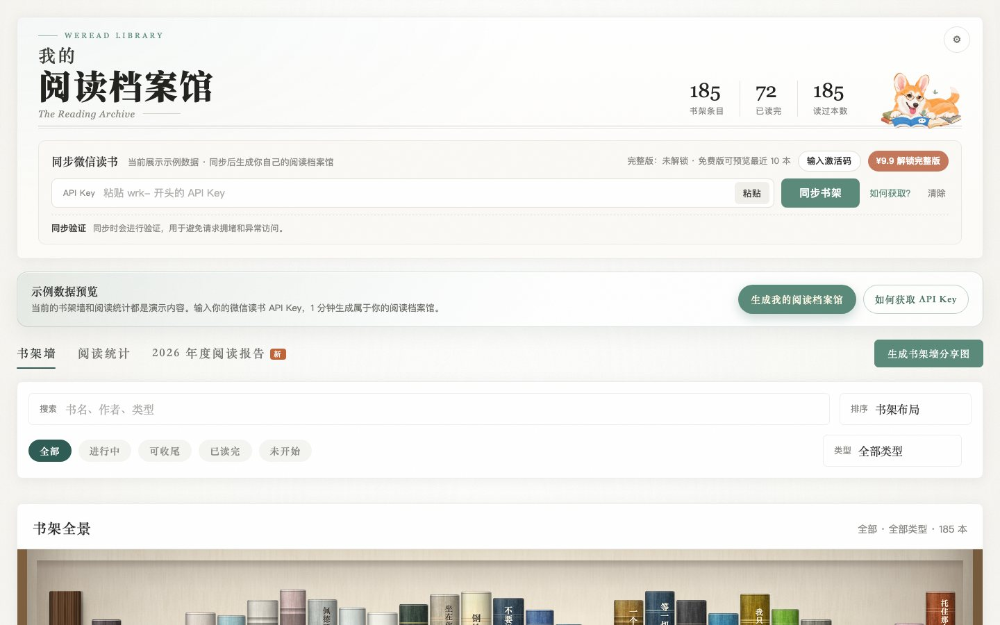
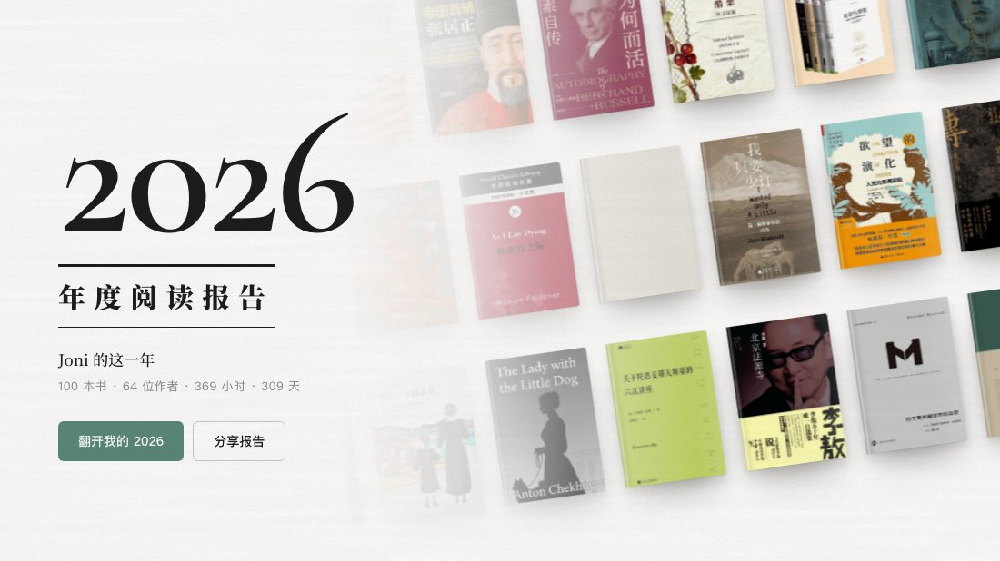

把 AI 用进日常，而不是停在演示
我把每周重复的工作逐项梳理，写清楚“这件事应该怎么做”，沉淀成任何 AI 工具都能照着执行的 Skill。这套体系从 Claude 迁到 Codex，规则一条没丢。
证据 12 项任务 → 9 个工作流 → 一套带来源规则、质量关卡和“草稿 / 提交 / 发布”权限分级的体系
做增长的市场人，也能把 AI 应用亲手做上线。


我把每周重复的工作逐项梳理，写清楚“这件事应该怎么做”，沉淀成任何 AI 工具都能照着执行的 Skill。这套体系从 Claude 迁到 Codex，规则一条没丢。
“生成了”不等于“做完了”。每条结论要有出处，每句引用要能在原文里找到，每份名单发出前要查泄漏。这正是做模型评测需要的习惯。
6 年都在对结果负责：内容、邮件、展会、社群。先把用户分层，再看数据，数据说要改就改。
我能把产品想法拆成 AI 编程工具做得出、我验得了的小迭代。设计、前端、后端、收费、上线都是我一个人完成的。你正在看的这个页面也是这么做出来的。
把微信读书的数据变成一座个人阅读档案馆：书架墙、阅读统计、月度报告和分享图。

大多数“AI 做营销”的资料是一堆提示词，写起来容易，但不可靠。我把“这件事应该怎么做”写清楚，让 AI 每次按同一标准做，我也能检查它有没有做到。
同一件事给 AI 解释过两次，就该写进 Skill。
找不到出处的数字标为缺失，不填补。
起草、提交、发布是不同的授权。
文件要打开检查，名单要查泄漏，平台状态要回读。
发现一个错误，就查同类的所有错误。
我发现 AI 搜索“看不见”我们的品牌：内容都困在公众号里。没有人要求我做，是我自己发现、自己推动的。
用 AI 辅助的 Python 流程把中国现制饮品数据库译成英文，按受控术语表统一用词。
3,000+ 联系人按业务类型分层；客户、退订、黑名单按规则排除，每次发送前核查。
食品科学本科，行业媒体，再到全球数据公司。不变的是：从零把一件事搭起来，做到数字动为止。